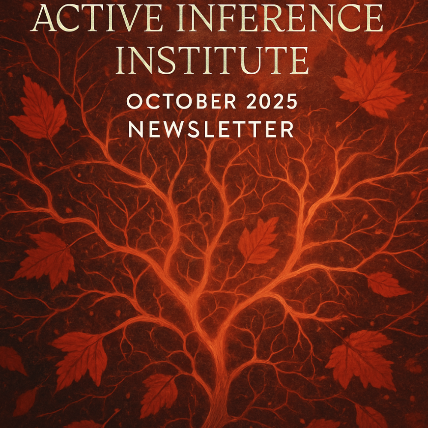

全期
新闻稿内容
此頁面保留存檔的雜誌文本、公開連結和媒體。
Active Inference Education Participation Research Newsletter
- Published
- Format
- Newsletter
We are heading towards the end of an exciting and interesting year. Regular project activities are ongoing and will continue through November. Check out which projects and meetings are happening and see where you might want to get involved. Read on to find out about the projects and focus areas of the next few weeks, and how you can engage this & next year.
Applied Active Inference Symposium
The 5th Applied Active Inference Symposium, with a theme of “Industry”, will be on November 12-14, 2025. See the Program, featuring a keynote by Karl Friston, along with 35+ presenters (livestreams, interactive sessions, and pre-recorded videos). Register now as a Participant. We are also seeking organizational Sponsors to increase the resourcing and impact of the Symposium — please reach out if you might be able to advocate for this possibility at your organization, or connect us with a suitable sponsor.
All information at symposium.activeinference.institute/
Applications open for 2026 Scientific Advisory Board (SAB)!
The SAB is a collaborative group of professionals who informally advise the Institute and serve as reviewers, mentors, contributors, and co-creators. For the coming year of 2026, we welcome applicants with backgrounds in education, research, open source, technology, and professional service — from within and beyond the Active Inference community. Membership on the SAB requires a modest time commitment (0–few hours per month), communication skills, and a shared enthusiasm for advancing the Institute’s mission and our broader field. We work to make the experience meaningful and streamlined.
If you would like to be considered, please complete this form before the end of November 2025. Additionally, if you know someone who would be great for this position, feel free to pass this opportunity along to them. All information: sab.activeinference.institute/
Applications open for 2026 Board of Directors (BoD)
The Active Inference Institute is currently seeking applicants for the 2026 Board of Directors! Our board provides formal governance and oversight for the Institute as a non-profit organization, in doing so serves the accessibility and applicability of Active Inference.
We seek people with experience in non-profit boards, grant writing, administration, professionalism and compliance to develop our BoD and enhance the resources of the Institute. The requirements for service on the BoD are availability during 2026 (~6+ hours per month, and a January strategic intensive), communication skills, and an enthusiasm for seeing the betterment of the Institute and our field.
If you would like to be considered, please complete this form before November 18th, 2025. Additionally, if you know someone who would be perfect for this role, feel free to pass this opportunity along to them. All information: bod.activeinference.institute/
Updates from Projects
- The Theoretical Neurobiology Group (Karl Friston’s research group meeting) continues to have 1-2 excellent meetings per week. Recordings are available on YouTube, also for those who are available.
- Some of highlight livestreams from the last month included:
- GuestStream #122.1 with Andrea Hiott on Radical Relation, Scaling without Hierarchies, Models without the Meat
- GuestStream #082.6 with Robert Worden on A Unified Theory of Language
- GuestStream #082.7 with Robert Worden on Language and Human Nature
- If you would like to help make audio-visual content with the Institute are many roles available “on stage” as well as “behind the scenes”, for example to help plan livestreams. This is an excellent place for contributions from people with all different backgrounds, language skills, and interests in Active Inference. See this video for more information.
- The AICACP project (Adam Safron, Michael Garfield, Victoria Klimaj, Tyler Mongan, Zan Huang, Hatim el Jazouli, Amelia Thomley, Nick Hay, Daniel Friedman) reports: Our team has been meeting weekly to make progress towards multiple goals for the AI Capabilities and Alignment Project (AICACP). We are currently: finalizing the first special issue related to our project, focused on world modelling; planning the second world modelling special issue; planning a special issue focused on agency; developing a podcast involving authors of the papers that are included in the special issue(s); and organizing the first of multiple workshops focused on AI capabilities (and later, alignment). We have a webpage here that further describes our project: Adam Safron - AI Capabilities & Alignment, and are currently working on developing a stand-alone website which we hope to launch in the next few weeks.
More
Use the Measurement form for providing updates on your (research, learning, application) work, which we may share in the monthly news letter.
All activities at, and products from, the Institute are provided open source and without any financial barriers. Donate to the Institute to support our work and sustainability in the years to come.
Here is the entry point for 2025, and ways to get involved with the Institute and Ecosystem this year.
Subscribe to or share the newsletter, or contact us with other philanthropic and grant ideas.
Get in touch if you have general or specific feedback, ideas, or questions for the Institute.
Always more to come! Stay tuned via the newsletter and Discord.
Officers 🐚🐜
